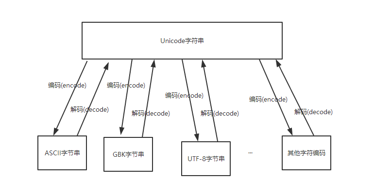

Contents
1.1. 字符编码处理¶
1.1.1. 入门¶
1.字符编码 python解释器在加载 .py 文件中的代码时，会对内容进行编码（默认ascill）
ASCII（American Standard Code for Information
Interchange，美国标准信息交换代码）是基于拉丁字母的一套电脑编码系统，主要用于显示现代英语和其他西欧语言，其最多只能用
8 位来表示（一个字节），即：2**8 = 256，所以，ASCII码最多只能表示 256
个符号。
显然ASCII码无法将世界上的各种文字和符号全部表示，所以，就需要新出一种可以代表所有字符和符号的编码，即：Unicode
Unicode（统一码、万国码、单一码）是一种在计算机上使用的字符编码。Unicode
是为了解决传统的字符编码方案的局限而产生的，它为每种语言中的每个字符设定了统一并且唯一的二进制编码，规定虽有的字符和符号最少由
16 位来表示（2个字节），即：2 **16 = 65536，
注：此处说的的是最少2个字节，可能更多
UTF-8，是对Unicode编码的压缩和优化，他不再使用最少使用2个字节，而是将所有的字符和符号进行分类：ascii码中的内容用1个字节保存、欧洲的字符用2个字节保存，东亚的字符用3个字节保存…
python2.x版本，默认支持的字符编码为ASCll python3.x版本，默认支持的是Unicode，不用声明字符编码可以直接显示中文
简单来说：
#encode("utf-8") 编码为utf-8，解码必须一致
#decode("utf-8") 解码utf-8
Unicode 最纯，
utf-8 ————> Unicode -----> gbk
gbk -------> Unicode -----utf-8
代码演示：
#!/usr/bin/env python
#-*- coding:utf8 -*-
wd = "胡建力学python"
wd_encode = wd.encode()
print(wd_encode)
wd_decode = wd_encode.decode()
print(wd_decode)
wd_encode_gb2312 = wd.encode("gb2312")
print(wd_encode_gb2312)
wd_decode_gb2312 = wd_encode_gb2312.decode("gb2312")
print(wd_decode_gb2312)
wd_encode_utf8 = wd.encode("utf-8")
print(wd_encode_utf8)
wd_decode_utf8 = wd_encode_utf8.decode("utf-8")
print(wd_decode_utf8)
1.1.2. 记忆方法参考下图：¶

Alt text
1.1.3. 指定字符编码¶
python制定字符编码的方式有多种，而编码格式是要写在解释器的下面的，常用的如下面三种:
第一种
#!/usr/bin/env python
# _*_ coding:utf-8 _*_
第二种
#!/usr/bin/env python
# -*- coding:utf-8 -*-
第三种
#!/usr/bin/env python
# coding:utf-8
1.1.4. Pychrm设置文件头模板¶
- 用于开发团队标记文件
#!/usr/bin/env python
#-*- coding:utf8 -*-
# auther; ${USER}
# Date：${DATE} ${TIME}
# filename: ${NAME}.py
1.1.5. Python中的保留字¶
>>> import keyword
>>> keyword.kwlist
['False', 'None', 'True', 'and', 'as', 'assert', 'break',
'class', 'continue', 'def', 'del', 'elif', 'else', 'except',
'finally', 'for', 'from', 'global', 'if', 'import', 'in', 'is',
'lambda', 'nonlocal', 'not', 'or', 'pass', 'raise', 'return', 'try',
'while', 'with', 'yield']